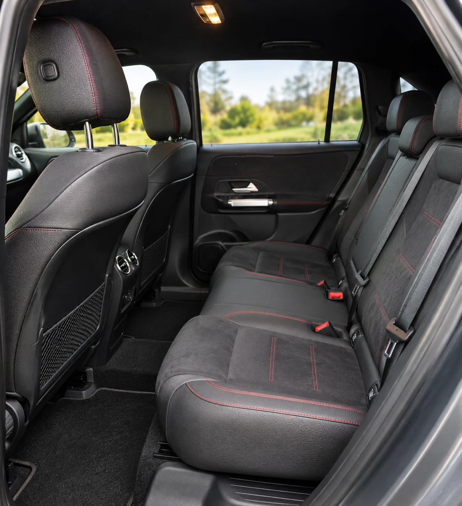

À chaque trajet,
la bonne préparation.
Transport avec chauffeur 24 h/24, 7 j/7, sur réservation selon disponibilité. Retrouvez les informations utiles pour organiser votre départ.
Transport aéroport
Pour les départs matinaux et les arrivées tardives.
Préparer ce trajetÀ nous préciser
Indiquez l’aéroport, le terminal si vous le connaissez, le numéro de vol et l’horaire prévu. Précisez le nombre de voyageurs et le volume des bagages.
Avant de partir
L’heure et le lieu de prise en charge, ainsi que les modalités en cas de retard, sont à convenir avec le chauffeur.
À nous préciser
Préparez le nom de la gare, le numéro de train, l’heure prévue et votre destination. Pour un départ, indiquez l’heure à laquelle vous souhaitez arriver à la gare.
Avant de partir
Le point de rendez-vous est confirmé avec le chauffeur pour vous retrouver facilement.
Déplacement professionnel
Un rendez-vous ou plusieurs étapes dans la journée.
Préparer ce trajetÀ nous préciser
Précisez les adresses, les horaires impératifs et les éventuelles étapes. Indiquez si un retour ou un temps d’attente est à prévoir.
Avant de partir
Le programme, les conditions d’attente et le tarif sont confirmés avant la réservation.
À nous préciser
Indiquez votre destination, l’horaire souhaité et le nombre de personnes. Signalez les bagages et les besoins pratiques, par exemple un siège enfant à confirmer.
Avant de partir
Pour un aller-retour, convenez dès le départ des modalités du trajet de retour.
Transport de personnes à mobilité réduite
Un échange préalable pour organiser votre déplacement.
Préparer ce trajetÀ nous préciser
Contactez le chauffeur pour préciser l’assistance souhaitée et les aides à la mobilité à transporter. Il n’est pas nécessaire de transmettre de données médicales.
Avant de partir
Les conditions d’installation et la compatibilité avec un fauteuil sont à confirmer avant toute réservation. Le site ne présume pas d’un transport en restant dans le fauteuil.

Un Mercedes EQB 250+
100 % électrique.
Le nombre de passagers, les bagages et les équipements nécessaires sont à préciser lors de votre demande pour confirmer la configuration adaptée.
Voir le véhicule et son habitacleToulouse ou Tarbes,
avec votre chauffeur privé.
Choisissez vos étapes et préparez l’aller et le retour avec René. Les excursions sont proposées sur demande, après confirmation de la disponibilité et du tarif.